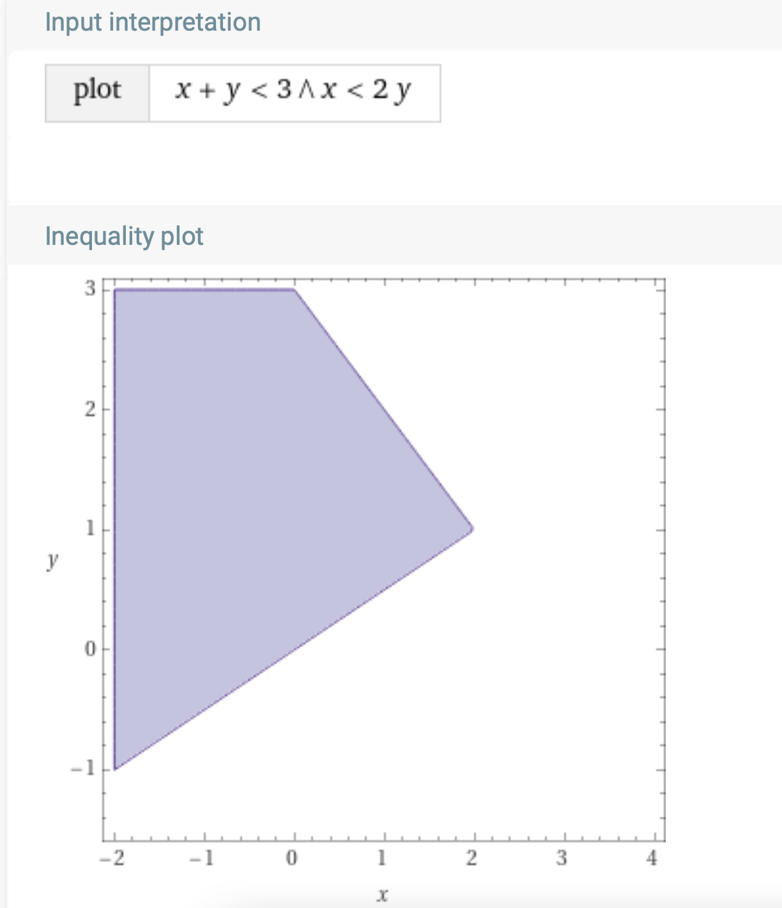
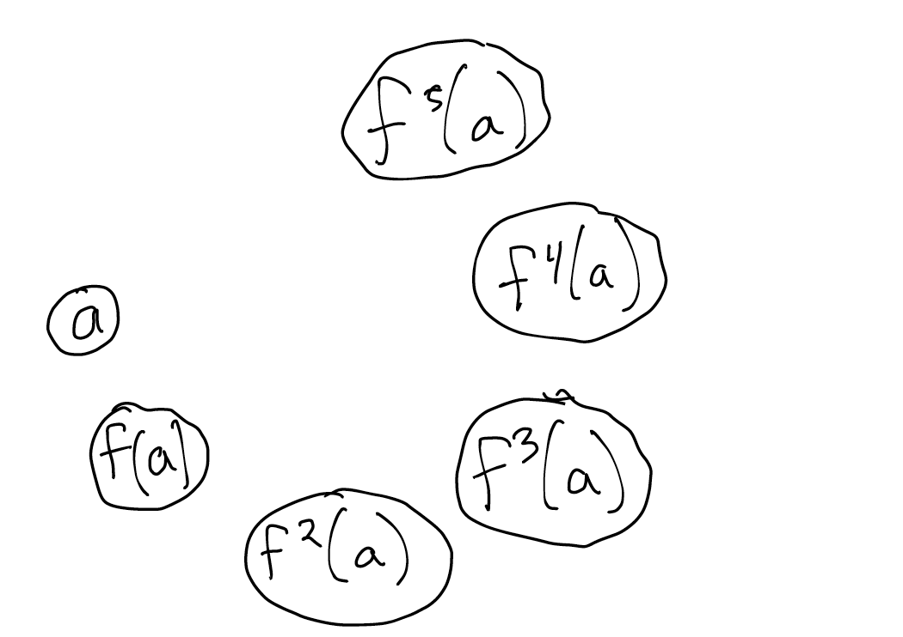
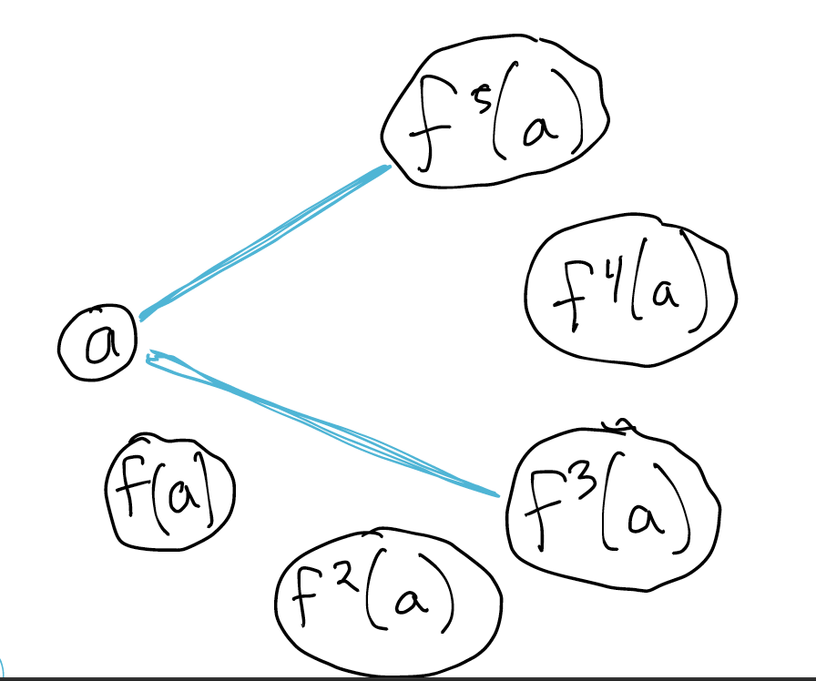
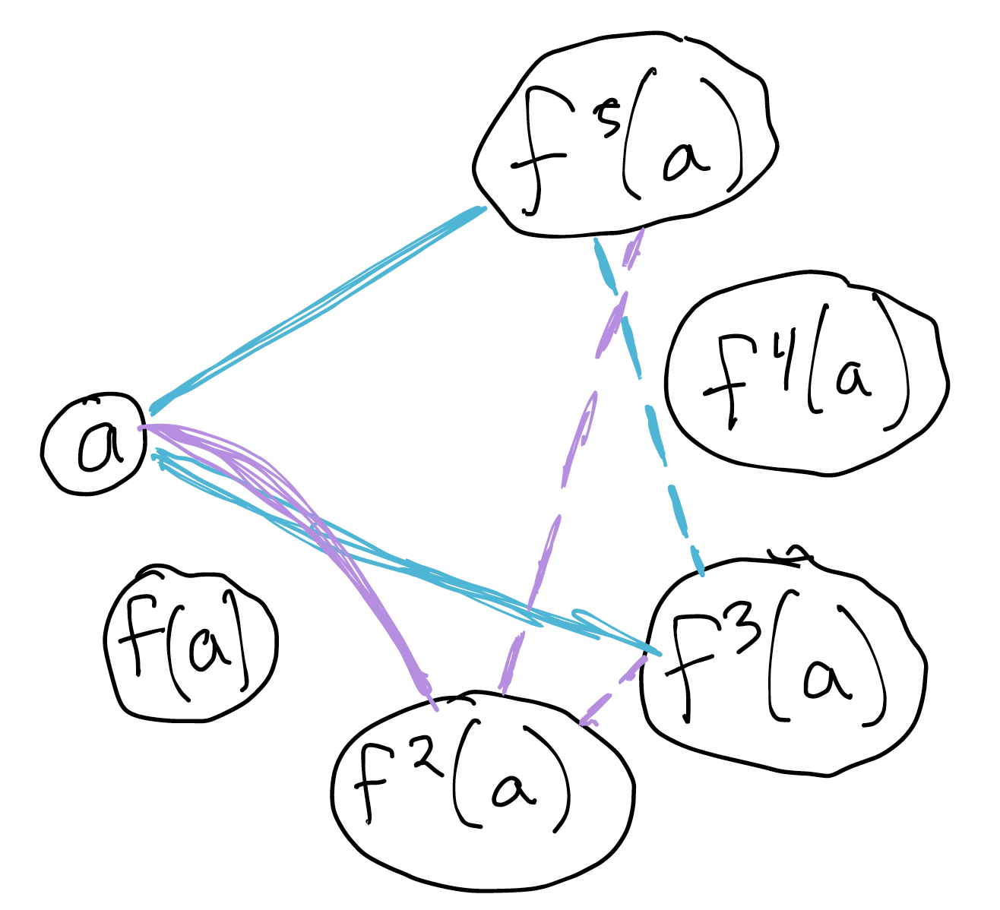
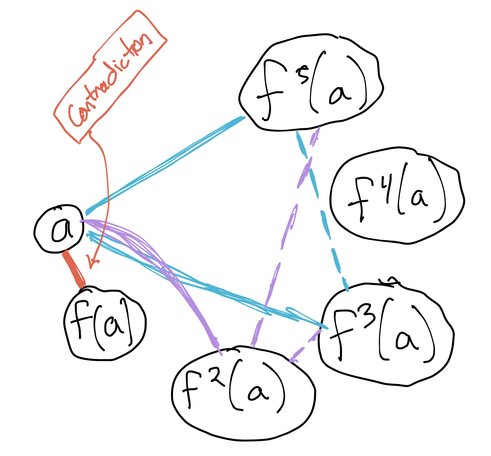
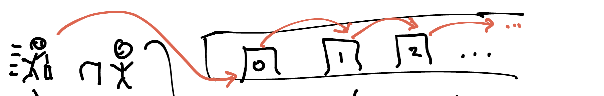
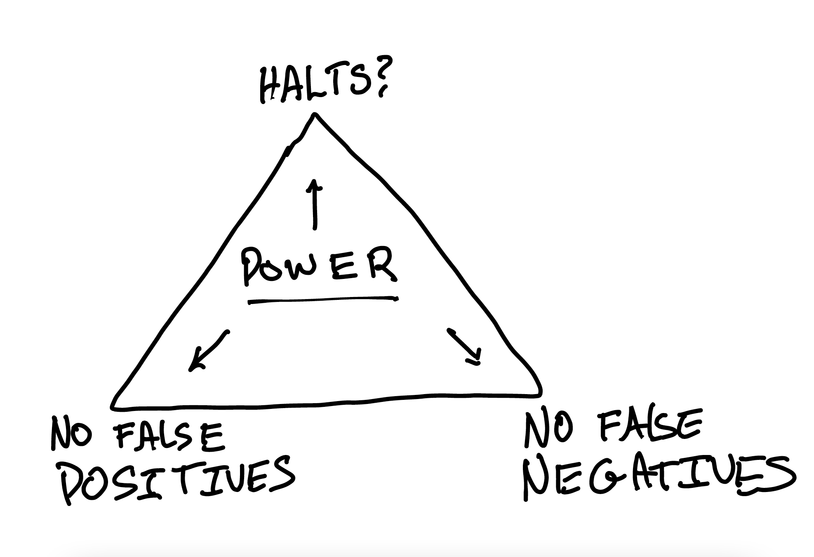

Satisfiability Modulo Theories (SMT)¶
Note well: the 2nd part of this chapter is very rough!
Boolean solvers are powerful, but not very expressive. If you want to use them to solve a problem involving (e.g.) arithmetic, you need to encode that idea with booleans. Forge does this with a technique called "bit-blasting": one boolean variable per bit in a fixed bitwidth, along with formulas that build boolean adders, multipliers, etc. as needed. This works well for small examples, but can quickly run into performance issues—and if you need actual mathematical integers (to say nothing of real numbers!) you're out of luck.
An SMT solver is a SAT solver that can handle various domain-specific concepts beyond boolean logic. Hence "modulo theories", where "modulo" means "with respect to". SMT solvers solve satisfiability, but with the addition of (say) the theory of linear integer arithmetic or the theory of strings.
From a certain point of view, Forge is an "SMT" solver, because it includes concepts like relations and bit-vector integers. But this isn't usually how people understand the term these days.
SMT solvers can be either "eager" or "lazy". An eager solver translates all the domain-specific constraints to boolean logic and then uses a boolean solver engine. That is Forge's approach. In contrast, a lazy solver actually implements domain-specific algorithms and integrates those with a purely-boolean solver core. Most modern SMT solvers tend to be lazy, and so they can benefit from clever domain algorithms.
Theories
In the logic community, theory is just another word for set of constraints. So when we say "the theory of linear integer arithmetic" we mean the axioms that define the domain of linear integer arithmetic.
Here are some common domains that SMT solvers tend to support:
- uninterpreted functions with equality;
- integer arithmetic (linear nearly always, non-linear sometimes);
- real arithmetic;
- lists and algebraic datatypes;
- strings;
- bit vectors;
- arrays; and
- datatypes.
Of course, there are many others implemented in various solvers. The solver we'll use this week supports many of these, but not all.
A Key Difference: Universal Quantifiers¶
Most modern SMT solvers don't have "bounds" in the same way Forge does. You can declare a datatype that's bounded in size, but the engine doesn't process that in the same way that Forge does. And the addition of domains like mathematical integers or lists means that the set of possible objects is infinite. This complicates universal (all) quantification.
What does it mean to say "For all \(x\) of type \(A\), \(P(x)\) is true?" In Forge, \(A\) always has an upper bound, and so the quantifier can always be converted to a big, but finite, "and" constraint. But suppose the type is actual mathematical integers? There are infinitely many integers, which means the solver can't convert the quantifier to a (finite) boolean constraint. This is such an important factor in designing SMT solvers that SMT literature often refers to universal quantification as just "quantification".
Universal quantification
For now, try to avoid universal quantification in SMT if you can. You can't always avoid it, but make sure you really need it to express your goals.
Universal quantifiction isn't the only issue. Even without it, the domain-specific algorithms the solver uses might not be guaranteed to terminate. (This is a consequence of the fact that some of the problems SMT solvers can express are undecidable, which means it is impossible to produce an always-correct, always-terminating algorithm to solve the general problem.) Because of this, the solver is always working under a timeout. If the solver times out, it will give a new result type, other than "sat" and "unsat": "unknown".
The Z3 Solver¶
Let's first step through some of the new things we can express with an SMT solver.
Setup¶
We'll be using the Python bindings for the Z3 solver, available here. You can also install via pip:
pip3 install z3-solver
To update to the latest version of the solver, you can run:
pip3 install z3-solver --upgrade
Another great solver is CVC5. Although we won't use it in class, it supports some things that Z3 doesn't (and vice versa). For instance: relations!
Boolean¶
We've still got the boolean-logic capabilities of a normal SAT solver:
def demoBool():
# Create a new solver
s = Solver()
# declare some boolean *solver* variables
p, q = Bools('p q')
s.add(Or(p, q))
if s.check() == sat:
print(s.model()) # remember, "model" ~= "instance" here
# (Think: how would we get a different instance?)
# getting at pieces of a model for programmatic use
print(s.model().evaluate(p)) # can pass a formula
When we run this, we get:
Terminology: model
Different communities use different terminology. In this book, we use the word model to describe the definitions and constraints you use to model a system, just like an automotive engineer might build a computer model of a car. This is generally what the software-engineering community means by the word.
The logic community, on the other hand, uses model to mean the same thing that we call an instance in Forge: the valuation that either satisfies or dissatisfies a set of constraints. There are good historical reasons for this, but for now, just be aware that Z3 will use the word "model" like a logician, not a software engineer.
Uninterpreted Functions And Integer Inequalities¶
If a symbol (function, relation, constant, ...) is interpreted, then its meaning is encoded via constraints built into the solver. In Forge, we'd say that:
addis an interpreted function, since Forge assigns it a meaning innately; but- relations you add as sig fields are uninterpreted, since without constraints you add yourself, Forge treats their values as arbitrary.
Functions, not relations
With some exceptions, SMT solvers usually focus on functions, not relations. This is another reason for Froglet to be about functions: they're more useful as a foundation in other tools!
Here is a Z3 function that demonstrates the difference between interpreted and uninterpreted functions:
def demoUninterpreted():
s = Solver()
# Solver variables: Ints and an uninterpreted functions
a, b = Ints('a b')
f = Function('f', IntSort(), IntSort())
s.add(And(b > a, f(b) < f(a)))
if s.check() == sat:
print(s.model())
print(s.model().evaluate(f(a)))
print(s.model().evaluate(f(b)))
print(s.model().evaluate(f(1000000)))
When we run this, we get:
Notice how the solver is reporting the function. It's not a table like it would be in Forge, but something much more like an if-then-else.
Numbers: Integers vs. Reals¶
Let's try something that involves arithmetic, and also explore how the solver handles real numbers vs. integers. Here's a small example of how numbers work in Z3:
def demoReals():
s = Solver()
x = Real('x')
s.add(x*x > 4)
s.add(x*x < 9)
result = s.check()
if result == sat:
print(s.model())
else:
print(result)
When we run this, we get an answer. But if we change the Real to Int, we won't because there is no integer between 2 and 3.
Factoring¶
Here's another example: factoring polynomials.
We could use a universal quantifier here, but perhaps we don't need one. How we frame the problem can drastically affect how Z3 performs—in cases like this, the solver can often automatically handle the quantifier. But not always.
def demoFactoringIntWithUniversal():
s = Solver()
# (x - 2)(x + 2) = x^2 - 4
# Suppose we know the RHS and want to find an *equivalent formula* LHS.
# We will solve for the roots:
# (x - ROOT1)(x + ROOT2) = x^2 - 4
xi, r1i, r2i = Ints('x root1 root2') # int vars
# Note: don't use xi ** 2 -- gives unsat?
s.add(ForAll(xi, (xi + r1i) * (xi + r2i) == (xi * xi) - 4 ))
result = s.check()
if result == sat:
print(s.model())
else:
print(result)
s.reset()
# Try another one:
# (x + 123)(x - 321) = x^2 - 198x - 39483
s.add(ForAll(xi, (xi + r1i) * (xi + r2i)
== (xi * xi) + (198 * xi) - 39483))
result = s.check()
if result == sat:
print(s.model())
else:
print(result)
# Note how fast, even with numbers up to almost 40k. Power of theory solver.
def demoFactoringReals():
s = Solver()
x, r1, r2 = Reals('x root1 root2') # real number vars
# ^ As before, solve for r1, r2 because they are unbound in outer constraints
# x is quantified over and therefore not a var to "solve" for
# (x + ???)(x + ???) = x^2 - 198x - 39484
s.add(ForAll(x, (x + r1) * (x + r2)
== (x * x) + (198 * x) - 39484))
result = s.check()
if result == sat:
print(s.model())
else:
print(result)
Unsatisfiable Cores¶
Let's try the same problem, but with a polynomial without any real roots. We should expect unsat (and indeed that's what we get). But can we get more than "unsat" out of the solver?
def demoFactoringRealsUnsat():
s = Solver()
# Here's how to start using cores in Z3 if you want, but
# see the docs -- it's a bit more annoying because you need to create
# new boolean variables etc.
s.set(unsat_core=True) # there are so many options, at many different levels
x, r1, r2 = Reals('x root1 root2') # real number vars
# Note e.g., x^2 - 2x + 5 has no real roots (b^2 - 4ac negative)
# To enable core extraction, we need to name every top-level constraint we want to blame
s.assert_and_track(ForAll(x, (x + r1) * (x + r2)
== (x * x) - (2 * x) + 5), 'constr1')
result = s.check()
if result == sat:
print(s.model())
else:
print(result)
# Note: it's a method of the solver, not the result.
print(s.unsat_core())
Another Demo: N-Queens¶
def nQueens(numQ):
s = Solver()
# Model board as 2d list of booleans. Note the list is *Python*, booleans are *Solver*
cells = [ [ z3.Bool("cell_{i}{j}".format(i=i,j=j))
for j in range(0, numQ)]
for i in range(0, numQ) ]
#print(cells)
# a queen on every row
queenEveryRow = And([Or([cells[i][j] for j in range(0, numQ)]) for i in range(0, numQ)])
#print(queenEveryRow) # for demo only
s.add(queenEveryRow)
# for every i,j, if queen present there, implies no queen at various other places
# Recall: queens can move vertically, horizontally, and diagonally.
# "Threaten" means that a queen could capture another in 1 move.
queenThreats = And([Implies(cells[i][j], # Prefix notaton: (And x y) means "x and y".
And([Not(cells[i][k]) for k in range(0, numQ) if k != j] +
[Not(cells[k][j]) for k in range(0, numQ) if k != i] +
# Break up diagonals and don't try to be too smart about iteration
[Not(cells[i+o][j+o]) for o in range(1, numQ) if (i+o < numQ and j+o < numQ) ] +
[Not(cells[i-o][j-o]) for o in range(1, numQ) if (i-o >= 0 and j-o >= 0) ] +
# flipped diagonals
[Not(cells[i-o][j+o]) for o in range(1, numQ) if (i-o >= 0 and j+o < numQ) ] +
[Not(cells[i+o][j-o]) for o in range(1, numQ) if (i+o < numQ and j-o >= 0) ]
))
for j in range(0, numQ)
for i in range(0, numQ)])
#print(queenThreats) # for demo only
s.add(queenThreats)
if s.check() == sat:
for i in range(0, numQ):
print(' '.join(["Q" if s.model().evaluate(cells[i][j]) else "_" for j in range(0, numQ) ]))
else:
print("unsat")
if __name__ == "__main__":
nQueens(4)
What's Going On In The Solver?¶
Modern SMT-solvers tend to be lazy (a technical term): they use a base boolean solver, and call out to domain-specific algorithms ("theory solvers") when needed. This is how Z3 manages to be so fast at algebraic reasoning.
But what shape of constraints do these theory-solvers accept? And how does an SMT solver manage to provide that? Let's look at one potential theory: systems of linear inequalities.
An Example Theory-Solver: Linear Inequalities¶
If I gave you a system of linear inequalities, like this:
Could you find a solution? Probably (at least, if you Googled or had an old algebra textbook to hand). Or, if you're like me, you might enter it into Wolfram Alpha:

But suppose we added a bunch of boolean operators into the mix. Now what? You can't solve a "system" if the input involves "or".
SMT solvers use a technique to separate out the boolean portion of a problem from the theory-specific portion. For example, if I wrote: x > 3 or y > 5, the solver will convert this to a boolean skeleton, replacing all the theory terms with boolean variables: T1 or T2, where T1 means x > 3 and T2 means y > 5. It can now find an assignment to that boolean skeleton with a normal SAT-solver. And every assignment is implicitly conjunctive: there's no "or"s left!
Suppose the solver finds T1=True, T2=True. Then we have the system:
If, instead, the solver found T1=False, T2=True, we'd have the system:
Notice that each of these solutions to the boolean skeleton provide a system of inequalities that we could solve with algebra. We'll call this the theory solver; it can solve very restricted kinds of problem (like linear inequalities), but solve them intelligently.
This idea lets us implement a very basic SMT solver by following these 3 steps:
- (1) get another instance that satisfies the boolean skeleton; and then
- (2) solve the resulting system with algebra.
- (3) If the result of (2) is unsat, or another solution is desired, restart from (1).
Modern SMT solvers have more integration between the boolean and theory solvers, but that's outside the scope of this course.
Another Example Theory-Solver: Uninterpreted Functions With Equality¶
Here are some constraints:
Are these constraints satisfiable? Does there exist some value of a and f such that these constraints are satisfied?
As before, we'll convert these to a boolean skeleton:
An Unproductive Assignment¶
This CNF is satisfied by the assignment T1=False, T2=False, T3=True, T4=False, which gives us the theory problem:
(I won't even need that fourth constraint to show this skeleton-assignment won't work.)
This system of equalities can be solved via an algorithm called congruence closure. It goes something like this. First, collect all the terms involved in equalities and make

Now draw undirected edges between the terms that the positive equality constraints force to be equivalent. Since we're being told that f3(a) = a, we'd draw an edge between those nodes. And similarly between f5(a) and a:

But equality is transitive! So we have learned that f5(a) and f3(a) are equivalent. (This is the "closure" part of the algorithm's name.)
From there, what else can we infer? Well, if f3(a) is the same as a, we can substitute a for f(f(f(a))) inside f(f(f(f(f(a))))), giving us that f(f(a)) (which we're calling f2(a) for brevity) is equivalent to a as well, since f5(a) = a. And since equality is transitive, f2(a) equals all the other things that equal a.

And if f2(a) = a, we can substitute a for f(f(a)) within f(f(f(a))), to get f(a) = a.
But this contradicts the negative equality constraint f(a) != a. So we've found a contradiction.

Now we've invented a second theory solver. The more of these we have, the more domains the solver can handle intelligently. (A natural question is: will all of these solvers work well together? The answer is not always, but we won't need to worry about that this semester.)
A Productive Assignment¶
Another way of solving the boolean skeleton is with the assignment T1=False, T2=False, T3=False, T4=True, which gives us the theory problem:
We'd proceed similarly. But this time we don't have many unavoidable equalities between terms: f3(a) is linked with a, and we could say that f6(a) = a via substitution---if we cared about f6(a). But it's not necessary for any of the inequalities to be violated.
Return to Decidability¶
There's a famous unsolved problem in number theory called Goldbach's conjecture. It states:
Every integer greater than 2 can be written as the sum of three primes.
1 isn't prime!
We generally consider 1 to be a non-prime number nowadays. But in the original formulation of this conjecture, it was meant to be. There are some alternative formulations in the article linked above, e.g., that every even natural number greater than two is the sum of two primes.
This is simple to state, and it's straightforward to express to Z3 or other SMT solvers. Yet, we don't know (at time of writing) whether or not the conjecture holds for all integers greater than 2. Mathematicians have looked for small (and not so small) counterexamples, and haven't found one yet.
That illustrates a big problem. To know whether Goldbach's conjecture is false, we just need to find an integer greater than 2 that cannot be written as the sum of 3 primes. Here's an algorithm for disproving the conjecture:
If Goldbach's conjecture is wrong, this computation will eventually terminate and give us the counterexample.
But what about the other direction? What if the conjecture is actually true? Then this computation never terminates, and never gives us an answer. We never learn that the conjecture is true, because we're never done searching for counterexamples.
Now, just because this specific algorithm isn't great doesn't mean that a better one might not exist. Maybe it's possible to be very smart, and search in a way that will terminate with either true or false.
Except that it's not always possible. CSCI 1010 talks about this a lot more, but I want to give you a bit of a taste of the ideas now that we're nearing the end of 1710.
Undecidability¶
I want to tell you a story---with only some embellishment.
First, some context. How do we count things? Does \({1,2,3}\) have the same number of elements as \({A, B, C}\)? What about \(\mathbb{N}\) vs. \(\mathbb{N} \cup \{BrownU\}\)? If we're comparing infinite sets, then it seems reasonable to say that they have the same size if we can make a bijection between them: a 1-1 mapping.
But then, counter-intuitively, \(\mathbb{N}\) and \(\mathbb{N} \cup \{BrownU\}\) are the same size. Why? Here's the idea, which is often called Hilbert's Hotel: suppose you work at the front desk of a hotel with a room for every natural number. And, that night, every room is occupied. A new guest arrives. Can you find room for them?
Think, then click!
Yes! Here's how. For every room \(i\), tell that guest to move into room \(i+1\). You'll never run out of rooms, and room 0 will be free for the new guest. Every guest will need to do a finite amount of work, but assuming we can send this message to everyone at once, it works out.

So, it's the late 1800's. Hilbert's Hotel (and related ideas) have excited the mathematical world. Indeed, can we use this trick to show that every infinite set is the same size? Are all infinities one, in a philosophical sense?
At this time, there was a non-famous but moderately successful mathematician named Georg Cantor. He was in his 40's when he made a groundbreaking discovery---contradicting the conventional wisdom (thanks, Hardy) that young mathematicians do all the interesting work. Cantor proved that the power set of \(\mathbb{N}\), that is, the set of subsets of \(\mathbb{N}\), must be strictly larger than \(\mathbb{N}\).
There is pandemonium. There is massive controversy. But, later mathematicians said that his ideas came 100 years before the community was ready for them. Hilbert himself actually said, later, that "No one shall drive us from the paradise Cantor has created for us."
How did Cantor prove this? By contradiction. Assume you're given a bijection between a set \(\mathbb{N}\) and its power set. Now, this bijection can be thought of as an infinite table, with subsets of \(N\) as rows and elements of \(N\) as columns. The cells contain booleans: true if the subset contains the element, and false if it doesn't.
| Set | 0 | 1 | ... |
|---|---|---|---|
| {} | N | N | ... |
| {0} | Y | N | ... |
| {0, 1} | Y | Y | ... |
| ... | ... | ... | ... |
Cantor showed that there must always be a subset of \(\mathbb{N}\) that isn't represented as a row in the table. That is, such a bijection cannot exist. Even with the very permissive definition of "same size" we use for infinite sets, there are still more subsets of the natural numbers than there are natural numbers.
What is the subset that can't be represented as a row in the table?
Think, then click!
Read off the diagonal from the top-left onward, and invert each boolean. In the table above, the set would contain both 0 and 1 (because those first two rows do not contain them, respectively) and so on.
This technique is called "Cantor diagonalization".
Why does this matter to US? Let me ask you two questions:
QUESTION 1: How many syntactically-valid Java program source files are there?
Think, then click!
There are infinitely many. But let's be more precise. A the source code of a program is a finite text file. The size may be unbounded, but each specific file is finite. And the alphabet used for each character is also finite (let's say between 0 and 255, although that isn't always entirely accurate).
Thus, we can think of a program source file as a finite sequence of numbers between 0 and 255. This is the same as representing a natural number in base 256. There are as many Java program source files as there are natural numbers.
QUESTION 2: How many mathematical functions from non-negative integer inputs to bool outputs are there, assuming your language has unbounded integers?
Think, then click!
Each such function returns true or false for any given non-negative integer. In effect, it is defining a specific set of these. There are as many such mathematical functions as there are sets of natural numbers.
What is our conclusion?
Try as you might, it is impossible to express all functions of these in any programming language where program texts are finite. So we know that programs in any language must be unable to express some things (indeed, most things). But is there anything that no language can express? Maybe all the things that are inexpressible are things that nobody actually needs or cares about. That would be comforting.
Unfortunately, there are plenty of important ideas that can't be expressed in any finite program. If you're curious about this, you might investigate CSCI 1010. I'm also happy to talk more about it offline. The following (very rough!) notes are meant to sketch one of the most famous problems in this area.
Another Story (OUTLINE)¶
It's the early 1900's. Hilbert and others: IS MATHEMATICS MECHANIZABLE?
In 30's: Church, Turing, Godel: "No. At least not completely."
Why? A few reasons. Here's a challenge. Write for me a program h(f, v) that accepts two arguments:
- another program; and
- an input to that program.
It must:
- always terminate;
- return true IFF f(v) terminates in finite time;
- return false IFF f(v) does not terminate in finite time
Suppose h exists, and can be embodied in our language. Then consider this program.
def g(x):
if h(g, x): # AM I GOING TO HALT? (remember h always terminates)
while(1); # NUH UH IM NOT!
else:
return; # HAHAHAHAHA YES I AM
Argh! Assuming that our halting function h is a program itself: CANNOT EXIST! This is called the "halting problem".
Exercise: what consequences for us? OK to be philosophical, uncertain.
"Undecidability"

What Does This Have To Do With SMT?¶
Gödel also proved that number theory is undecidable: if you've got the natural numbers, multiplication, and addition, it is impossible to write an algorithm that answers arbitrary questions about number theory in an always correct way, in finite time.
There are also tricks you'll learn in 1010 that let you say "Well, if I could solve arbitrary questions about number theory, then I could turn the halting problem into a question about number theory!"
There's so much more I'd like to talk about, but this lecture is already pretty disorganized, so I'm not going to plan on saying more today.